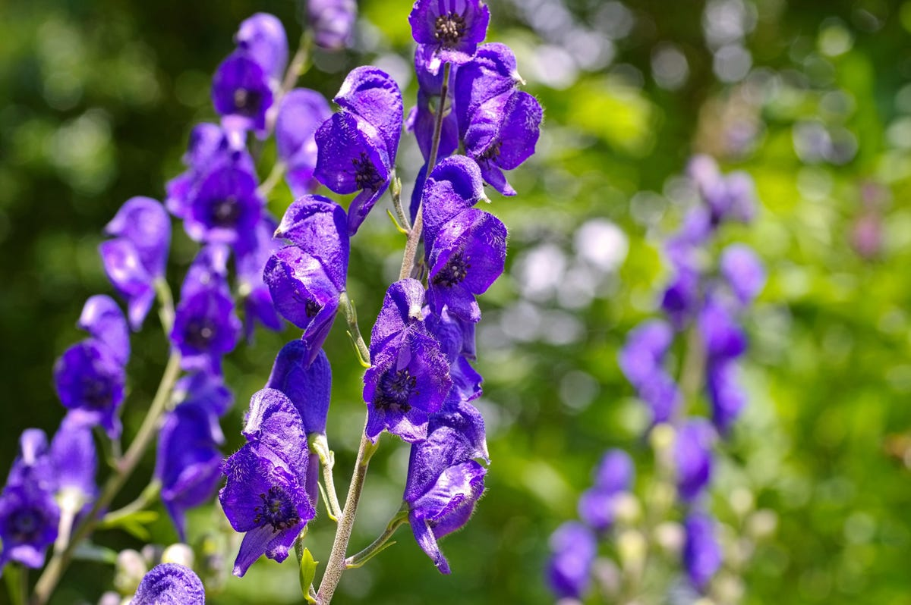

Aconitum
Aconitum is a genus of over 250 species of herbaceous perennials of which most are extremely poisonous. They are mostly found in mountainous areas of the northern hemisphere in moist but well-drained soils in forests, natural areas, moist woods and sitting along creek banks. These plants will grow better in cool summer areas.
All parts of the plant, especially the roots, contain toxins. Aconitine is the most dangerous of these toxins. It is most noted as a heart poison but is also a potent nerve poison. Raw aconite plants are very poisonous.They are used as herbs only after processing by boiling or steaming to reduce their toxicity.
This plant has been used since ancient times as a poison used on spears and arrows for hunting and battle. As wolfsbane, it was believed to repel werewolves (and real wolves!). Ancient Romans used it as a method of execution.
Marked symptoms may appear almost immediately, usually not later than one hour, and with large doses, death is almost instantaneous. Death usually occurs within two to six hours in fatal poisoning (20 to 40 mL of tincture may prove fatal). The initial signs are gastrointestinal, including nausea, vomiting, and diarrhea. This is followed by a sensation of burning, tingling, and numbness in the mouth and face, and of burning in the abdomen. In severe poisonings, pronounced motor weakness occurs and cutaneous sensations of tingling and numbness spread to the limbs.
Wearing gloves is advisable when handling this plant ;)
For further information, please visit these sites!
https://en.wikipedia.org/wiki/Aconitum
https://plants.ces.ncsu.edu/plants/aconitum/
https://www.poison.org/articles/why-is-monkshood-considered-a-poison--174
https://www.gardensonline.com.au/gardenshed/plantfinder/show_3489.aspx